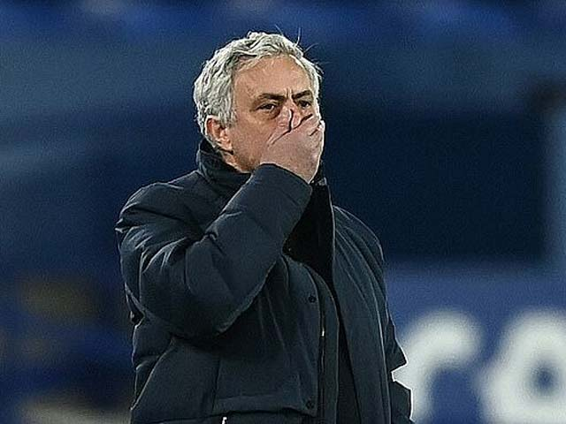

Teach your student using the books the professionals use
Chiều 19/4 (giờ Hà Nội), một loạt đầu báo Anh uy tín loan tin HLV Jose Mourinho đã bị Tottenham sa thải. "Tottenham thông báo rằng Jose Mourinho và ban huấn luyện gồm Joao Sacramento, Nuno Santos, Carlos Lalin và Giovanni Cerra đã thôi làm nhiệm vụ",
trang chủ Tottenham cũng đưa ra thông báo.

Quyết định này được ban lãnh đạo Spurs đưa ra không lâu sau trận hòa thất vọng của Tottenham trước Everton ở vòng 32 Ngoại hạng Anh, chấm dứt quãng thời gian chỉ hơn 1 năm rưỡi (17 tháng) lĩnh ấn của chiến lược gia Bồ Đào Nha.
Các nguồn tin thân cận cho biết Jose Mourinho bị sa thải vì ông từ chối cho cầu thủ thực hiện buổi tập sáng 18/4 để phản đối quyết định tham dự Super League của câu lạc bộ. CLB cũng không hài lòng với cách Mourinho liên tục công khai chỉ trích các cầu
thủ
Với quyết định này, Mourinho không còn cơ hội dẫn dắt Tottenham đá chung kết Cúp Liên đoàn với Man City vào ngày 25/4. Lần đầu sau 20 năm trong nghiệp cầm quân, Mourinho trắng tay khi rời một CLB, từ khi ông còn dẫn dắt Uniao de Leiria
ở Bồ Đào Nha.
Chia sẻ về sự vụ này, Chủ tịch Daniel Levy nói trên trang chủ Tottenham: "Jose và đội ngũ huấn luyện của anh ấy đã ở bên chúng tôi trong những khoảng thời gian khó khăn nhất của đội bóng. Jose là người thực sự chuyên nghiệp, đã giúp Tottenham hồi phục
trong giai đoạn đại dịch. Cá nhân tôi rất thích được làm việc cùng anh ấy và tiếc rằng mọi thứ lại đổ bể giữa chừng. Anh ấy và đội ngũ sẽ luôn được chào đón tại đây".
Trong thời gian tới, hai trợ lý của Mourinho là Ryan Mason và Chris Powell sẽ thay chiến lược gia người Bồ Đào Nha tiếp quản đội, trước khi Tottenham tìm được HLV mới.
Hiện tại, Tottenham đứng thứ 7, kém nhóm dự Champions League 5 điểm và đã bị Dinamo Zagreb loại ở vòng 1/8 Europa League. Tottenham từng giữ đỉnh bảng Ngoại hạng Anh mùa này vào tháng 12/2020, nhưng sau đó mất phong độ và thụt lùi.